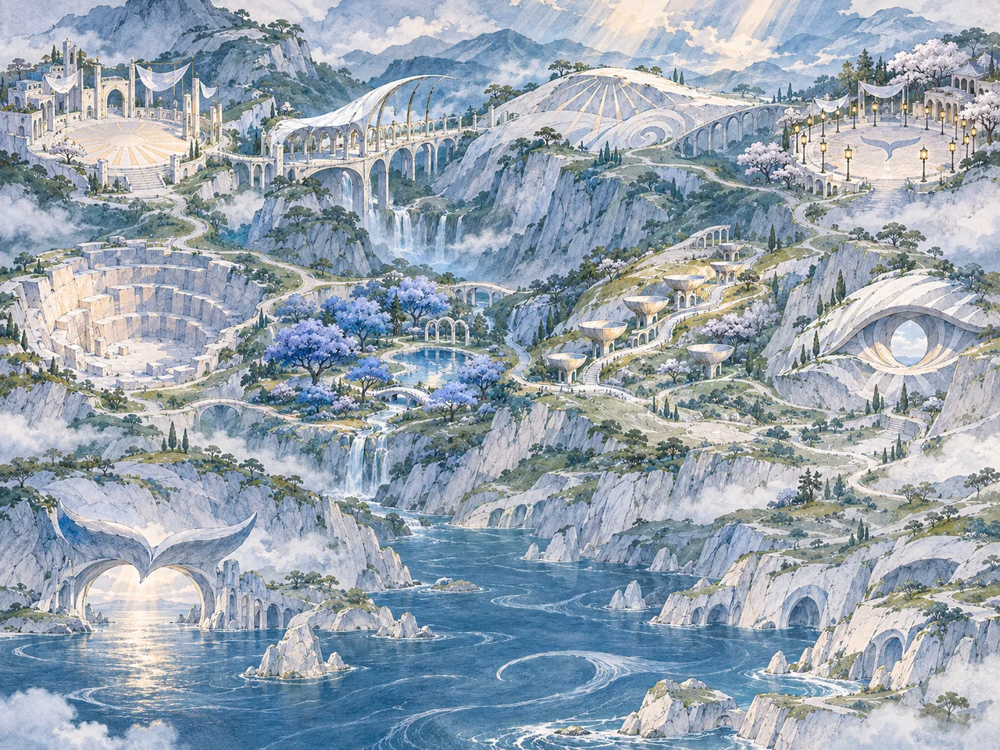
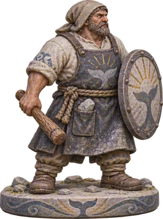
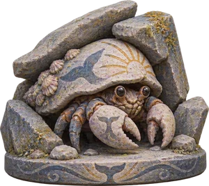

Бог с чистой страницы
Карты и фигурки ведущего
Игровой комплект
3 игрока · 4 игрока · 5 игроков · 6 игроков · 7 игроков · 8 игроков
Карта кампании

Поля боя


Герои


Персонажи ведущего


Противники
 Каменная ласта 5Каменная ласта 2Каменная ласта 1Каменная ласта 4Каменная ласта 3Каменная ласта 6
Каменная ласта 5Каменная ласта 2Каменная ласта 1Каменная ласта 4Каменная ласта 3Каменная ласта 6

Карьерный сторож 4Карьерный сторож 1Карьерный сторож 6Карьерный сторож 5Карьерный сторож 3Карьерный сторож 2

Каменный клешневик 4Каменный клешневик 2Каменный клешневик 1Каменный клешневик 5Каменный клешневик 6Каменный клешневик 3